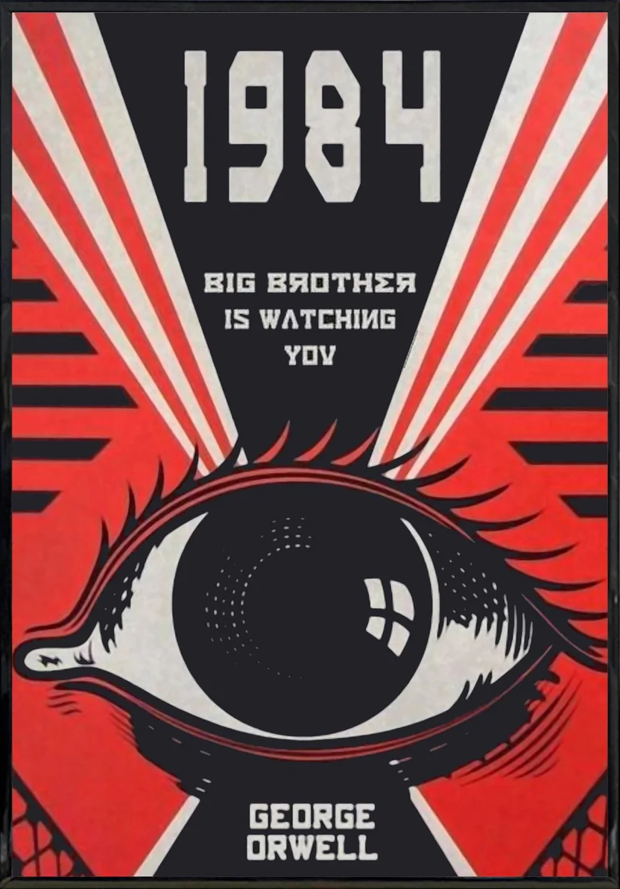

In George Orwell's seminal novel 1984, the dystopian world of Oceania presents a chilling vision of a society under constant surveillance. The pervasive eyes of Big Brother, symbolized by ubiquitous telescreens, serve not only as tools for observation but as instruments of control and oppression. The novel provides a stark warning about the dangers of unchecked surveillance, illustrating how such practices erode privacy, stifle dissent, and ultimately pave the way for totalitarianism.
Eroson of Privacy
One of the most striking aspects of Orwell's 1984 is the complete erosion of privacy. In Oceania, citizens are monitored constantly through telescreens, which capture both audio and visual data. This omnipresent surveillance creates a society where individuals cannot retreat into private spaces to express their thoughts freely. As Winston Smith, the protagonist, reflects on his predicament, "There was no way of knowing whether you were being watched at any given moment." This constant state of uncertainty forces individuals to conform outwardly to the Party's ideology, effectively erasing any semblance of personal freedom or autonomy. This loss of privacy extends beyond physical spaces into the realm of thought. The concept of "thoughtcrime" in 1984 underscores the Party's desire to control not just actions but beliefs and ideas. By monitoring and punishing dissenting thoughts, the Party aims to eliminate any potential threats to its power. As Orwell writes, "Nothing was your own except the few cubic centimetres inside your skull." The telescreens, in this sense, become tools of mental and emotional control, ensuring that individuals internalize the Party's doctrines out of fear of being caught.
Stifling Dissent
The surveillance in 1984 serves a dual purpose: it not only prevents rebellion but also stifles any form of dissent. The omnipresence of surveillance creates a culture of fear and suspicion, where individuals are hesitant to trust even their closest friends or family members. Winston's relationship with Julia is fraught with paranoia and secrecy, illustrating the profound impact of surveillance on personal relationships. This environment of mutual distrust is a deliberate tactic by the Party to prevent the formation of any organized resistance. The novel also depicts the use of propaganda in conjunction with surveillance to maintain control. The telescreens broadcast a constant stream of Party-approved information, shaping public perception and reinforcing the Party's version of reality. This manipulation of information, combined with the threat of surveillance, ensures that dissenting voices are silenced before they can gain traction. As Orwell poignantly states, "War is peace. Freedom is slavery. Ignorance is strength." This doublespeak reinforces the Party's control over the populace's thoughts and beliefs, further stifling dissent.
The Path to Totalitarianism
Orwell's 1984 illustrates how surveillance, when left unchecked, can lead to the rise of totalitarianism. The Party's control over every aspect of life in Oceania is maintained through a combination of fear, propaganda, and surveillance. By constantly monitoring citizens, the Party eliminates any possibility of rebellion or independent thought, creating a society where individuals are reduced to mere cogs in the state machinery. The novel's depiction of a totalitarian regime underscores the dangers of allowing surveillance to become pervasive and unchallenged. In the real world, the increasing use of surveillance technologies—such as CCTV cameras, internet monitoring, and facial recognition software—raises concerns about the potential for similar abuses of power. While these technologies are often justified in the name of security, Orwell's 1984 serves as a cautionary tale about the potential consequences of prioritizing control over freedom.
Conclusion
George Orwell's 1984 offers a powerful critique of surveillance and its impact on society. The novel's portrayal of a world where privacy is nonexistent, dissent is stifled, and totalitarianism reigns supreme serves as a stark warning about the dangers of unchecked surveillance. As modern societies grapple with the balance between security and freedom, 1984 reminds us of the importance of safeguarding our privacy and resisting the encroachment of authoritarianism. The lessons from Orwell's dystopian vision remain as relevant today as they were when the novel was first published, urging us to remain vigilant in protecting our fundamental rights and freedoms. As we confront the challenges of our own surveillance technologies, we must remember the chilling maxim from 1984: "Big Brother is watching you." This reminder compels us to critically examine the balance between security and privacy and to resist the quiet creep of authoritarianism that surveillance can facilitate."